|
Yen's K-Shortest Path Algorithm
Python Implementation
|
Yen's algorithm computes single-source K-shortest loopless paths for a graph with non-negative edge cost. The algorithm was published by Jin Y. Yen in 1971 and implores any shortest path algorithm to find the best path, then proceeds to find K − 1 deviations of the best path. See also, Yen's Algorithm.
The algorithm can be broken down into two parts, determining the first k-shortest path, , and then determining all other k-shortest paths. It is assumed that the container 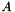 will hold the k-shortest path, whereas the container 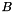, will hold the potential k-shortest paths. To determine , the shortest path from the source to the sink, any efficient shortest path algorithm can be used.
To find the 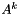, where  ranges from 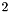 to
ranges from 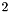 to  , the algorithm assumes that all paths from to have previously been found. The iteration can be divided into two processes, finding all the deviations and choosing a minimum length path to become . Note that in this iteration,
, the algorithm assumes that all paths from to have previously been found. The iteration can be divided into two processes, finding all the deviations and choosing a minimum length path to become . Note that in this iteration,  ranges from 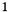 to .
ranges from 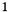 to .
The first process can be further subdivided into three operations, choosing the , finding 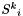, and then adding to the container . The root path, , is chosen by finding the subpath in that follows the first i nodes of , where  ranges from to 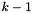. Then, if a path is found, the cost of edge 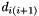 of is set to infinity. Next, the spur path, , is found by computing the shortest path from the spur node, node , to the sink. The removal of previous used edges from 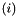 to 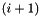 ensures that the spur path is different. 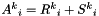, the addition of the root path and the spur path, is added to . Next, the edges that were removed, i.e. had their cost set to infinity, are restored to their initial values.
ranges from to 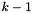. Then, if a path is found, the cost of edge 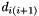 of is set to infinity. Next, the spur path, , is found by computing the shortest path from the spur node, node , to the sink. The removal of previous used edges from 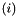 to 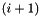 ensures that the spur path is different. 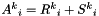, the addition of the root path and the spur path, is added to . Next, the edges that were removed, i.e. had their cost set to infinity, are restored to their initial values.
The second process determines a suitable path for by finding the path in container with the lowest cost. This path is removed from container be and inserted into container and the algorithm continues to the next iteration. Note that if the amount of paths in container equal or exceed the amount of k-shortest paths that still need to be found, then the necessary paths of container is added to container and the algorithm is finished.
The example uses Yen's K-Shortest Path Algorithm to compute three paths from 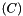 to 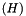. Dijkstra's algorithm is used to calculate the best path from to , which is with cost 5. This path is appended to container and becomes the first k-shortest path, .
Node of becomes the spur node with a root path of itself, 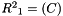. The edge, , is removed because it coincides with the root path and a path in container . Dijkstra's algorithm is used to compute the spur path 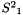, which is 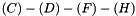, with a cost of 8. 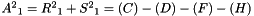 is added to container as a potential k-shortest path.
Node 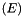 of becomes the spur node with 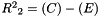. The edge, 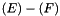, is removed because it coincides with the root path and a path in container . Dijkstra's algorithm is used to compute the spur path 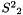, which is 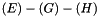, with a cost of 7. 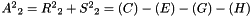 is added to container as a potential k-shortest path.
Node 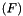 of becomes the spur node with a root path, 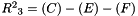. The edge, 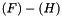, is removed because it coincides with the root path and a path in container . Dijkstra's algorithm is used to compute the spur path  , which is 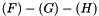, with a cost of 8. 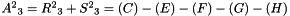 is added to container as a potential k-shortest path.
, which is 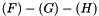, with a cost of 8. 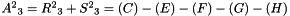 is added to container as a potential k-shortest path.
Of the three paths in container B, 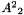 is chosen to become 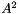 because it has the lowest cost of 7. This process is continued to the 3rd k-shortest path. However, within this 3rd iteration, note that some spur paths do not exist, and the path that is chosen to become 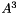 was found within the 2nd iteration, namely 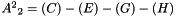.
To store the edges of the graph, the shortest path list , and the potential shortest path list , 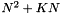 memory addresses are required.<ref name="yenksp2"> At worse case, the every node in the graph has an edge to every other node in the graph, thus 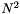 addresses are needed. Only 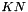 addresses are need for both list and because at most only paths will be stored, where it is possible for each path to have  nodes.
nodes.
The time complexity of Yen's algorithm is dependent on the shortest path algorithm used in the computation of the spur paths, so the Dijkstra algorithm is assumed. Dijkstra's algorithm has a worse case time complexity of 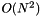, but using a Fibonacci heap it becomes 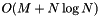, where 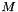 is the amount of edges in the graph. Since Yen's algorithm makes calls to the Dijkstra in computing the spur paths, the time complexity becomes 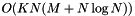.
 1.7.6.1
1.7.6.1